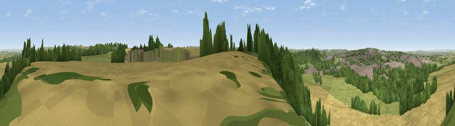

Viewpoint near Over Compton
#18422 in England · top 41% of its area beats it · near Over ComptonThe view, rendered

A 360° render of this exact spot computed from the terrain model, tree cover and land cover — summer colours, afternoon light, calibrated against photographs of famous viewpoints. Real trees, hedges and buildings will differ in detail.
The panorama
Grey silhouette: terrain skyline in each direction (720 bearings, Earth curvature and refraction included). Dashed green: skyline with trees (+15 m) and buildings (+8 m) as obstacles. Blue strip: how far the ground is visible on each bearing.
Where the view opens
Wedge length = distance to the farthest visible ground on that bearing (vegetation-aware). Rings at 10, 25 and 50 km.
What fills the view
49% cropland · 24% woodland · 21% grassland · 7% built-up
Angular shares of the visible panorama (visual magnitude), not map area. Landscape diversity 0.52 (0–1 Shannon).
Key numbers
More beautiful places nearby
The staircase of upgrades: each row has a higher view potential than everything closer. Driving times are estimates from straight-line distance, calibrated against real road routing — check an actual route before setting out.
| Place | Direction | Drive | Score |
|---|---|---|---|
| Viewpoint near Yeovil | WSW · 2 km | ~6 min | 56.5 |
| Viewpoint near Nether Compton | ENE · 3 km | ~8 min | 67.8 |
| Round Hill | NE · 5 km | ~11 min | 70.4 |
| The Beacon | NE · 9 km | ~17 min | 75.8 |
| Viewpoint near North Poorton | SSW · 18 km | ~31 min | 77.0 |
| Viewpoint near Hewish | WSW · 19 km | ~32 min | 78.5 |
| Lewesdon Hill | SW · 21 km | ~35 min | 83.3 |
| Beacon Knap | SSW · 29 km | ~45 min | 84.8 |
50.94486, -2.59244 · source: screening · position refined by local search. Computed location — check access rights before visiting.